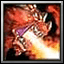

- 主要屬性 力量
攻擊範圍 128
- 基礎護甲 ６
基礎攻速 1.8
- 基礎攻擊 109 - 127
基礎跑速 300
齋藤道三之長子。1548年道三打算由長子義龍為家督，但由於人心不穩，加上義龍及道三之間的關係漸惡，加上義龍一直懷疑自己是否為道三親生，道三迫於無奈，決定讓幼子孫四郎為新家督，義龍得知後決定先下手為強，1555年義龍召孫四郎到稻葉山城，並藉機把他殺死。當時正出外打獵的道三得知後，立即回鷲山集結三千人防守，但義龍糾結一萬大軍，以土岐正嫡的名義宣戰，並與道三方對峙。最後道三與義龍兵力相差懸殊，道三方迅速潰敗，道三首級也被義龍手下取下。與父親一樣同為"下剋上時代"的最佳例子。
攻擊時所噴出的火燄將可以使地面持續燃燒3秒，使身處其中的敵軍受到每秒130燒傷。
此被動技能僅於施展「火龍化身」期間產生作用，無視魔法免疫造成傷害。
目標單位對所有魔法免疫。
此被動技能僅於施展「火龍化身」期間產生作用。
-
-
W
火靈詛咒
-
100/100/100/100
-
20/18/16/14
指定目標敵軍施展，該目標與周圍其他敵軍將受到火靈詛咒，降低(10/17/24/31)%移動速度並且無法施法。若是被火靈詛咒的敵軍受到火龍吐息術，則會在接下來7秒額外受到每秒(40/60/90/120)的傷害。
冷卻時間隨技能等級提升降低。
-

-
E
火龍吐息術
-
80/100/120/140
-
8
對指定的方向噴出一道扇形火焰，對其中的敵軍造成(150/270/390/510)傷害。如果敵軍具有火靈詛咒，則會在接下來7秒額外受到每秒(40/60/90/120)的傷害。
增加自身(7/14/21/28)%總攻擊傷害。
變身為火龍，具有600遠距攻擊力以及擴散的能力。能增加8護甲、50移動速度和熔火吐息的能力。並且獲得魔法免疫。持續(30/37/44)秒。
學習等級為6/12/18。
永久性的提升(3/6/9/12)靈活、智慧和力量。